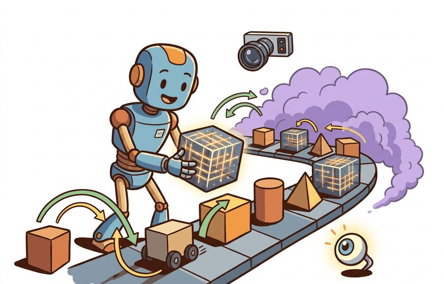
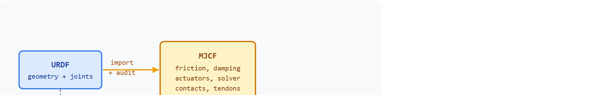

"Readable robot models are debugging tools disguised as XML."
A Patient Simulator Builder

This section assumes familiarity with the rigid-body state representation and manual stepping loop introduced in section 11.1. The MJCF model structure defined here is extended in section 11.3, where the same model files are compiled for GPU-parallel rollouts under MJX. URDF import and the asset-contract conventions covered here recur in section 11.4, where Isaac Lab wraps both formats inside a larger training and scene-management stack.
A robot's real-world behavior can collapse entirely because a single inertia value in its model file is wrong. That failure is invisible until transfer. MJCF and URDF are not just geometry descriptions: they encode every physics assumption your learned controller will silently inherit, from joint damping to contact friction to actuator bandwidth. Right now, as sim-to-real transfer moves from research curiosity to production requirement, getting those model files right is the gating skill. In this section you will read and write MJCF from scratch, read and import URDF (the skill most teams actually need, since URDF is usually inherited rather than authored by hand), spot the gaps URDF leaves for simulation, and build the habit of treating model files as first-class engineering artifacts rather than boilerplate.
This section's scope is deliberately asymmetric: you will author MJCF directly, but for URDF the emphasis is reading and auditing an imported file rather than writing one from scratch, since that is the workflow production teams actually follow.
The simulator state is not just an implementation detail. It is the contract that links dynamics, observations, logging, replay, and controller debugging.
This section applies dynamics background to model files: MJCF or URDF is not just geometry, it is mass distribution, constraints, contacts, and actuation. Those fields decide whether a learned controller transfers.
MuJoCo became a standard in robot learning because it is fast, scriptable, and unusually good at contact-rich rigid-body simulation for its size. It does not try to be a full robot operating environment. Instead, it gives researchers a tight loop: define a model, step dynamics, read state and sensors, apply actions, repeat. That tight loop is why MuJoCo remains useful even as larger stacks such as Isaac Lab and Genesis grow.
The practical advantage is inspectability. In MJCF, the same file can expose defaults, actuator gains, contact friction, joint damping, timestep, and solver options. That makes MuJoCo a strong tool for debugging the physics contract before moving into a larger stack where scene assets, sensors, and training launchers can obscure the exact modeling assumption that changed.
Figure 11.2B traces how these formats relate: URDF flows directly into ROS and MoveIt, but importing it into MuJoCo requires an audit step before it becomes the MJCF physics contract that the compiled MjModel (the in-memory, ready-to-simulate structure MuJoCo produces after reading an MJCF file, introduced with code below) hands to the controller during training.
MJCF is MuJoCo's native modeling format, designed for simulation. URDF is a robot description format common in Robot Operating System (ROS) workflows, designed around links, joints, visual geometry, collision geometry, and transmissions. MuJoCo can load URDF, but production-quality simulation often requires checking mesh paths, inertias, collision simplification, actuator mapping, and contact parameters after import.
| Format | Best use | Strength | Risk |
|---|---|---|---|
| MJCF | MuJoCo-native simulation and robot-learning experiments | Readable defaults, contacts, actuators, sensors, and solver options | Less universal across ROS and CAD pipelines |
| URDF | Robot descriptions shared with ROS 2, MoveIt, and hardware stacks | Common ecosystem format for links, joints, and meshes | Often underspecifies simulation details such as friction and contact quality |
| MJB | Fast loading of compiled MuJoCo models | Useful for repeated runs after model compilation | Not a human-editable source of truth |

A common assumption is that MJCF and URDF are interchangeable because both are XML files that describe a robot with links and joints. This is wrong in any embodied AI context where physics accuracy matters. URDF was designed for hardware description and ROS integration, not for simulation fidelity: it has no standard fields for contact friction, actuator dynamics, solver settings, or tendon coupling. MJCF encodes all of those. The correct mental model is that URDF defines robot identity (geometry, joint topology, mass) while MJCF defines the physics contract (what the controller will actually experience during training). Treating them as equivalent is the root cause of most silent sim-to-real gaps, because the gap lives precisely in the fields URDF leaves unspecified.
The tradeoffs in the table above stay abstract until you see them in a concrete file, so the smallest possible MJCF model makes a good starting point.
Code Fragment 1 shows a complete MuJoCo model as a Python string. It defines a floor, a falling body, a joint, and a spherical geometry. The example is intentionally small so the physical assumptions are visible before MuJoCo compiles them.
# Build a tiny MJCF model string and inspect its key modeling choices.
# MuJoCo will handle compilation, constraints, collision, and stepping.
# Install with: pip install mujoco
mjcf = """
<mujoco model="falling_sphere">
<option timestep="0.01" gravity="0 0 -9.81"/>
<worldbody>
<geom name="floor" type="plane" size="1 1 0.02" friction="1.0 0.005 0.0001"/>
<body name="ball" pos="0 0 0.25">
<freejoint/>
<geom name="ball_geom" type="sphere" size="0.05" mass="0.2"/>
</body>
</worldbody>
</mujoco>
"""
for phrase in ["timestep", "gravity", "friction", "freejoint", "mass"]:
print(f"{phrase}: {phrase in mjcf}")timestep: True gravity: True friction: True freejoint: True mass: True
The <freejoint/> tag deserves attention because it is easy to overlook. A free joint grants a body all six degrees of freedom (DoF) relative to the world: three translational and three rotational. Without it, the body welds in place regardless of gravity or contact forces. This distinction matters in embodied AI. A mobile base or thrown object that is accidentally welded produces zero training signal for locomotion or manipulation. The error stays invisible in a static render. On real hardware the equivalent failure is a robot that cannot move its base because a software lock was never released.
Mechanically, MuJoCo implements a free joint by adding seven scalar positions to the state vector (three coordinates plus a unit quaternion, where a quaternion is a four-number representation of 3D rotation that avoids the singularities of Euler angles) and six velocity entries (three linear, three angular). The compiler reserves those slots in data.qpos and data.qvel, and the constraint solver treats the body as unconstrained. Replacing <freejoint/> with a named hinge or slide joint reduces that count to one, while omitting any joint tag reduces it to zero and welds the body.
After the model exists, MuJoCo reduces the manual stepper from Section 11.1 to a standard load, data allocation, and stepping loop. Code Fragment 2 shows the practical route, using MuJoCo's Python API to compile XML and advance the model.
# Load the MJCF string with MuJoCo and advance the simulation.
# The library owns collision detection, constraint solving, and integration.
# This is the production shortcut for the manual stepper from Section 11.1.
import mujoco
model = mujoco.MjModel.from_xml_string(mjcf)
data = mujoco.MjData(model)
for _ in range(25):
mujoco.mj_step(model, data)
print(round(float(data.qpos[2]), 4))
print(model.nbody, model.ngeom, model.njnt)0.2151 2 2 1
MjModel, MjData, and mj_step. The final line reports the compiled body, geometry, and joint counts, which are useful sanity checks after loading a model.The from-scratch stepper in Section 11.1 used about 20 lines and modeled one vertical coordinate. MuJoCo uses a few API calls to step a compiled articulated model with contacts, constraints, sensors, and actuators. The library handles the solver and data layout, while you still own the modeling assumptions.
Writing a model by hand from scratch, as the minimal example did, keeps every assumption visible, but most real projects inherit an existing description instead, and that is where the assumptions go quiet.
URDF is often where a robot model starts, especially in ROS 2 workflows. The problem is that a robot description good enough for visualization is not automatically good enough for contact-rich control. A controller trained on a URDF with a missing <inertial> tag can, in practice, reach high success in simulation and near-zero success on hardware. Fixing that single tag has, in reported cases, closed the gap within a day of debugging, though the fix time depends on how quickly the missing tag is diagnosed. This is the silent physics contract failure: the model compiles without errors but encodes wrong assumptions from the start. Meshes may be too detailed for collision. Inertias may be missing or approximate. Joint limits may differ from hardware. Transmission tags (the URDF elements that describe how an actuator's motor output maps to joint motion, such as a gear ratio) may not map cleanly to the simulator's actuator model.
So far: a URDF that renders correctly can still fail silently, because missing inertias, oversimplified meshes, mismatched joint limits, and unmapped transmission tags all compile without error yet change the physics the controller trains against. The next paragraphs turn that risk into a concrete audit procedure.
The import audit compares source intent with compiled behavior. Confirm that units, mesh scale, link inertias, joint axes, damping, actuator ranges, collision shapes, and contact pairs all match the physical robot or benchmark spec. A model that passes visual inspection but fails a mass or contact-impulse check is not converted yet.
A URDF import is a hypothesis about the physics, not a finished model. The audit is what turns that hypothesis into a contract you can train against.
Before reading the steps below, try to guess: of the ten parameters listed in a typical URDF import checklist, how many does a production team verify before their first training run? Anecdotally, across manipulation and locomotion teams the authors have observed or discussed informally, the common answer is around two: mesh paths and joint names. The other eight are often discovered later, on hardware, one failed deployment at a time. Teams that run a fuller audit before training tend to report closing sim-to-real gaps in far fewer rollouts than teams that skip it and instead discover the same root cause through trial and error on physical hardware; the exact rollout counts vary widely by task and are not something this section claims to measure precisely.
Input: URDF file path, target MuJoCo model spec (joint names, mass totals $m_\Sigma$, actuator torque limits $\tau_\text{max}$, contact surface list)
Output: Verified MjModel with confirmed mass, joint axes $\hat{a}_i$, contact pairs, and actuator gain vector $\alpha$
mujoco.MjModel.from_xml_path(urdf_path) and capture the compilation log; any warning about missing <inertial> tags signals near-zero inertia on that link.model.body_mass and compare against the hardware datasheet; a relative error above 5% indicates a missing or incorrect <inertial> block.model.jnt_axis[j] and confirm alignment with the URDF <axis xyz/> tag; misaligned axes produce torques in the wrong direction under closed-loop control.model.jnt_range and model.dof_armature against the hardware spec; soft-limit violations do not raise errors at load time.model.actuator_gainprm[k, 0] matches the intended PD (proportional-derivative, a feedback control law that combines position error and velocity error) or torque-control parameterization; a gain of zero silently disables the actuator.model.geom_type and confirm that visual meshes (type 7) are not reused for collision; replace them with simplified convex hulls (type 6, where a convex hull is the smallest bulging surface that wraps a shape without any dents) or primitives to avoid unreliable contact normals.mujoco.mj_step, record the contact force array $\lambda(t)$, and confirm contacts appear on the expected surfaces (floor, fingertips, wheel patches) at the expected times.data.subtree_com[1]; drift greater than $\epsilon = 10^{-3}$ m per step under gravity alone indicates a constraint or inertia error.model.opt.timestep and model.opt.iterations; for contact-rich tasks, timestep $\Delta t \leq 0.005$ s and at least 50 solver iterations reduce constraint penetration artifacts.mujoco.mj_saveLastXML and commit it to version control as the canonical source of truth, replacing the raw URDF for simulation experiments.Trace the import audit with a tiny two-link arm whose datasheet lists total mass 3.00 kg. Step 1: load the URDF; the compile log warns that link forearm has no <inertial> tag. Step 2: read model.body_mass = [0.0, 2.00, 0.001], so $m_\Sigma = 2.001$ kg against the datasheet 3.00 kg, a relative error of $|2.001-3.00|/3.00 = 0.333$, far above the 5% threshold; the near-zero 0.001 on forearm confirms the missing block. Step 3: read model.jnt_axis = [[0,0,1],[0,1,0]]; the URDF declared the elbow axis as 0 0 1, so the second joint is misaligned and would torque the wrong way. Step 4: a zero-action 100-step rollout shows data.subtree_com[1] drifting 0.004 m per step, above $\epsilon = 10^{-3}$, consistent with the bad inertia. After adding the inertial block ($m = 1.00$ kg) and fixing the axis to 0 0 1, the rerun gives $m_\Sigma = 3.00$ kg (error 0.000) and drift $7\times10^{-5}$ m per step. Audit passes; commit the corrected MJCF.
Choose MuJoCo when articulated contact dynamics, tendon or actuator modeling, and inspectable XML assets are central to the task. The asset contract should name joints, inertias, collision geometry, actuator gains, and solver settings.
After importing URDF into MuJoCo, inspect the compiled model rather than trusting the file extension. Check mass totals, joint axes, limits, collision geometry, mesh scale, actuator mapping, and whether contacts appear where the task needs them.
A controller trained on an imported URDF often appears stable in open-loop but drifts or destabilizes under closed-loop feedback. The root cause is usually a mismatch between compiled values and intended ones. When a URDF omits the <inertial> tag on a link, MuJoCo assigns near-zero inertia to that link. The link then accelerates far too easily, and the controller learns to apply physically unrealistic torques. A second symptom is contact forces appearing at the wrong surface. This happens when visual meshes serve as collision geometry instead of simplified convex hulls. Neither error appears in a rendered screenshot; both surface only when the controller acts on the physics.
Think of the compiled model as a recipe card that your controller must cook from, even if the ingredients are wrong. If the recipe says "a pinch of salt" but the pantry contains a cup, every dish will be oversalted, yet the card looks fine on paper. A link with near-zero inertia is that mislabeled ingredient: the model file compiles without complaint, the visual render looks correct, but the physics solver treats the link as almost weightless, so the controller learns to apply forces that would shatter a real joint. The mismatch only becomes visible when the dish is served on hardware.
A model file that compiles without errors but encodes wrong physics is not a starting point, it is a trap with a valid file extension.
The Franka Panda gripper ships with an official URDF from the franka_description ROS package. That URDF is accurate enough for MoveIt motion planning but silently underspecifies two things that matter for learning: the fingertip friction coefficients (which control whether a 50 g object slips during a precision grasp) and the finger tendon coupling (which makes both pads close at a fixed ratio rather than independently). A team that trains a diffusion policy on this unmodified URDF and deploys on a physical Panda typically observes a 20 to 30 percent drop in grasp success on smooth objects relative to simulation (a range reported across multiple manipulation sim-to-real studies published between 2022 and 2024), traced directly to the missing friction and coupling. The fix is a MuJoCo-specific MJCF overlay that adds friction="1.5 0.02 0.001" on the fingertip geoms and a tendon element coupling the two finger joints. That MJCF overlay becomes the canonical source of truth for all learning experiments, while the original URDF is retained for hardware integration with ROS 2 and MoveIt.
Expected output: A MuJoCo model audit should leave the MJCF or URDF source, compiled model counts, total mass, actuator ranges, contact-pair checks, solver options, and one short rollout trace that another teammate can replay.
The ANYmal quadruped, trained in simulation by ETH Zurich and ANYbotics, relies on a carefully audited MJCF-style physics contract so that learned locomotion policies transfer to the real robot on industrial inspection sites. The team randomizes contact friction, actuator latency, and link masses around their measured nominal values precisely because those are the fields a naive URDF import leaves underspecified. Getting the actuator and contact parameters right in the model file is what lets a policy trained on thousands of parallel sim rollouts walk over gravel and stairs on day one of hardware deployment.
A robot model is ready for learning only when it is readable twice: once as source XML and once as compiled physics. If those two stories disagree, trust the compiled audit.
Which parts of a robot model are for visualization, which parts are for collision, and which parts affect dynamics? If those are mixed together in your file, debugging will be slower than it needs to be.
Beginner (weekend): Build a minimal Gymnasium environment wrapping the MJCF falling-sphere model from Code Fragment 1, add a hinge joint and a single actuator, and verify that the step function returns observations and rewards correctly using MuJoCo's Python API. The key challenge is mapping MuJoCo's qpos/qvel state layout to a flat observation vector that Gymnasium expects.
Intermediate (1 to 2 weeks): Import a publicly available URDF for a tabletop manipulator (such as the Franka Panda from mujoco_menagerie) into MuJoCo, run the full URDF-to-MuJoCo import verification algorithm from this section, and produce an annotated MJCF overlay that fixes at least one friction or inertia gap you discover. The key challenge is reconciling the compiled model's mass totals and contact pairs against the hardware datasheet, then confirming the fix closes a measurable simulation gap with a short ROS2-compatible test rollout.
Add a hinge joint and a motor actuator to the MJCF string in Code Fragment 1. State which line defines geometry, which line defines allowed motion, and which line defines how the agent can act.
Three active directions are reshaping how robot model files are built and used in 2024 to 2026.
Differentiable model identification. Rather than hand-tuning MJCF inertia and friction fields against hardware, recent work treats those parameters as differentiable variables and optimizes them end-to-end against real trajectories. Google DeepMind's MuJoCo MJX work (2024) demonstrated gradient-based system identification at scale, reducing the manual audit loop to an automated minimization over contact-force residuals. Labs at CMU and ETH Zurich are extending this to tendon and actuator dynamics.
Neural-augmented contact models. Classical MJCF contact pairs assume smooth convex geometry and Coulomb friction, where Coulomb friction is the standard model in which the maximum friction force is a fixed coefficient times the normal contact force, independent of contact area or sliding speed. The RoboPianist and DexDeform lines of work (2024) from Stanford and Berkeley show that learned residual contact forces layered on top of MuJoCo's solver close the friction-cone mismatch for deformable and high-DoF manipulation tasks, without replacing the readable XML asset. This keeps the physics contract inspectable while improving transfer.
Cross-format semantic consistency via USD and scene graphs. NVIDIA's IsaacSim 4.x (2025) and the emerging Robot Description Format (RDF) effort use USD (Universal Scene Description, a file format originally built for film production that stores geometry, materials, and scene hierarchy in one interchangeable graph) as a lossless interchange layer that preserves inertia, actuator, and sensor semantics across MJCF, URDF, and rendering pipelines. The goal is that a robot should not silently acquire different contact parameters when moving between simulators.
Open problem for a PhD student: No principled benchmark exists for measuring physics-parameter drift across format round-trips (URDF to MJCF to USD and back). A student could build a differentiable round-trip loss over a suite of contact-rich tasks and use it to audit toolchain consistency, producing both a dataset and a metric that the field currently lacks.
Goal: Feel how a single missing inertia field changes physics, the exact failure URDF import hides.
Tools needed: Python with pip install mujoco, and a model from mujoco_menagerie (the Franka Panda or a quadruped works well).
What to do: Load the menagerie MJCF and print model.body_mass and the total $m_\Sigma = \sum_i m_i$. Now create a copy of the XML and delete one link's <inertial> mass attribute (or set mass to a near-zero value such as 1e-6). Recompile both versions.
What to vary: Which link you cripple (a heavy base link versus a light fingertip), and the magnitude of the bad mass (1e-6, 1e-3, then correct).
What to observe: Run a 200-step zero-action rollout on each model and compare data.subtree_com drift per step and any contact forces. The crippled link should accelerate unrealistically and the center-of-mass should drift far faster than the correct model. Note how nothing in a static render reveals the problem, only the rollout does. This is the silent physics contract failure, reproduced in 20 minutes on your own machine.
MuJoCo is strongest when you want a small, inspectable, fast dynamics loop. MJCF makes simulator assumptions readable, while URDF import should be treated as a conversion that requires auditing.
Section 11.3 keeps the MuJoCo mental model but changes the execution target: JAX for MJX and NVIDIA Warp for MuJoCo Warp.
This source explains why MuJoCo was designed around fast, accurate simulation for control. It is essential for readers who want to understand the design choices behind MJCF and MuJoCo's solver pipeline.
Google DeepMind. "MuJoCo Modeling Documentation."
The modeling docs describe MJCF, URDF loading, compilation, and model structure. Practitioners should use it when turning the examples in this section into real robot models.
Google DeepMind. "MuJoCo XML Reference."
The XML reference is the authoritative guide to MJCF tags and attributes. It is best read while editing a concrete model because each attribute controls a physical or numerical assumption.
Google DeepMind. "MuJoCo Menagerie."
MuJoCo Menagerie provides curated robot models in MJCF. Readers building their first robot-learning experiments can study these files to see realistic modeling patterns.
Open Robotics. "URDF Tutorials."
The ROS URDF tutorials explain the robot description format used across many hardware and middleware workflows. They complement this section by showing why URDF is common even when MJCF is better for MuJoCo-native simulation.